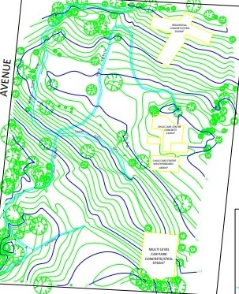
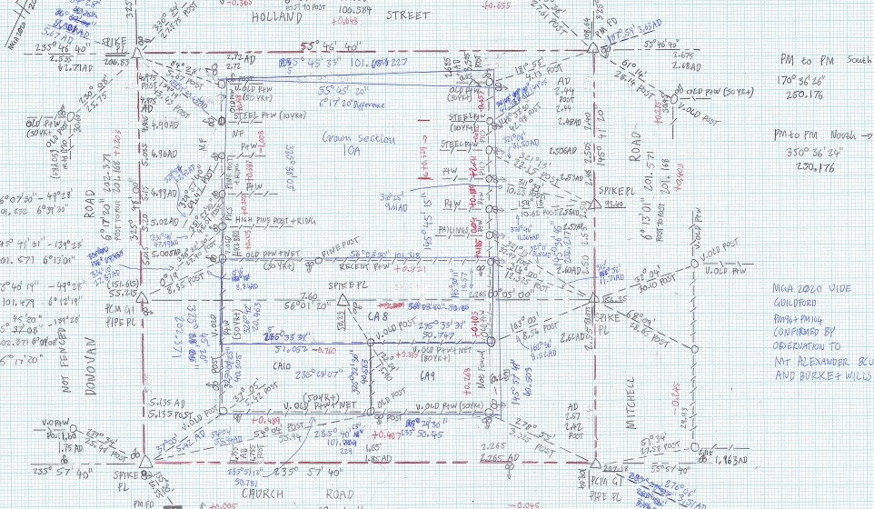
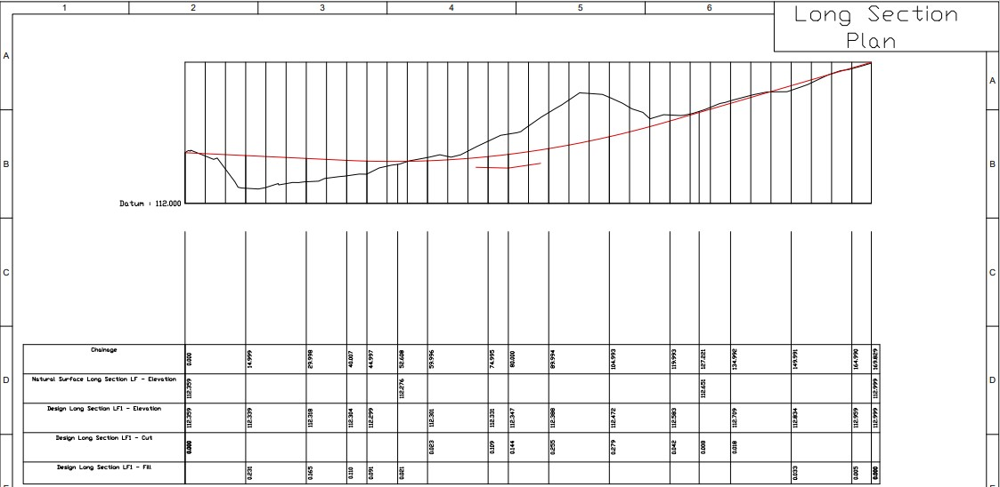
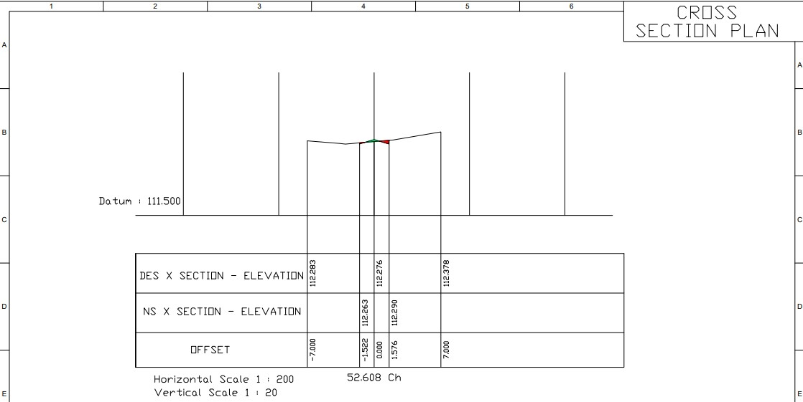
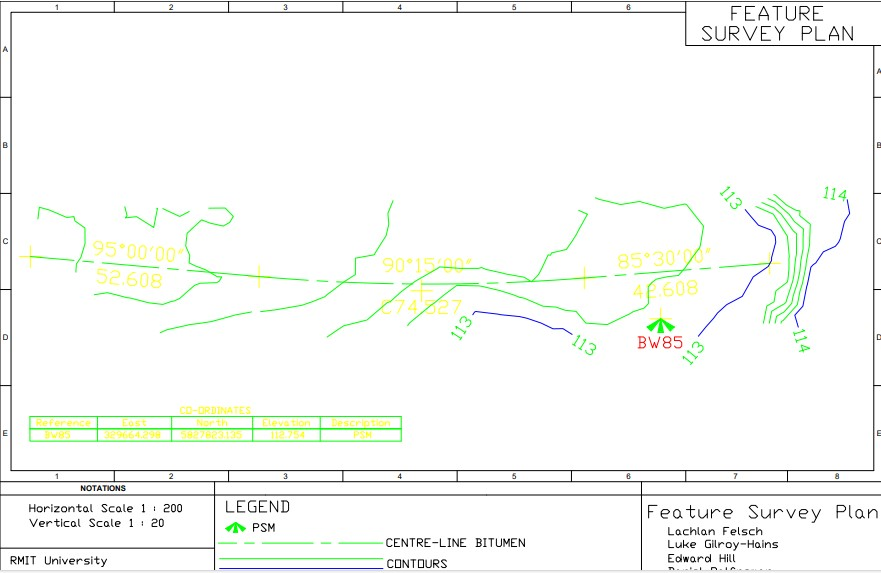
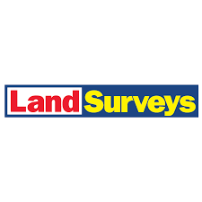

Geoportfolio
Lachlan Felsch
About
This website is the Geoportfolio of Lachlan Felsch which was made for the subject Professional Practice (GEOM2116). The website displays
key achievements and high standard work completed in Educational and Professional environments
An introduction about myself, My name is Lachy, I was born in Melbourne during the month of January in the year 2000. I grew up in the outer eastern suburbs
and recently moved to the northern suburbs. I am in the fourth and final year of the Bachelor of Applied Science (Surveying) (Honours) course after moving
from the Diploma of Surveying and the Advanced Diploma of Surveying. I love all aspects of Cadastral Surveying, this is a key area in surveying as it relates
to re-establishing property boundaries and creating subdivisons. I think the coolest part of Cadastral Surveying is finding old survey marks that are up to
80 years old, these are most commonly found in rural surveys as the land is usually untouched until the next surveyor comes. I also love the idea of problem
solving, this type of work requires constant decision making and thinking about how the survey can be completed successfully.
Hobbies include watching and playing all types of sport, including Cricket and Footy. I can watch sports for days on end.

Academic Portfolio Overview
Cadastral Surveying 1 & 2
Cadastral Surveying 1 & 2 consisted of first learning cadastral surveying law including why certain decisions are made in a re-restablishment survey,
learning what's in the surveyors handbook such as how to draw types of fences on a fieldcard. Then we moved on to completing our own re-restablishment
survey, drawing the worksheet and completing all of the computations.
Below is my fieldcard from the rural re-establishment survey assignment of crown land:
Rural Re-establishment survey of Crown Allotment 8, 9 & 10

Engineering Surveying
Engineering Surveying is all about the construction side of surveying, it taught us the basics of engineering including:
calculating cut & fill, calculating reduced level and design reduced level.
The major assignment for this subject was a road setout, where we created our own road design on LisCAD, exported the plans,
set it out in the field at Bundoora and then create CAD outputs of the road setout. These outputs included:
- Long Section Plan
- Cross Section Plan x 9
- Feature Survey Plan
The long section plan is the whole road design showing only the centreline of the road as if the view was the length of the road,
with the natural surface as a black line and the road design as a red line. The Chainages are every 15 metres, each chainage is
where a cross section is. The cross section shows parts of the road as if it was the width of the road, the outer two lines are
the corridor of interest, the two lines further in from there are the extents of the road. The feature survey plan includes the
bearing and distance of the road curve, the closest level contours near the road and the closest permanent mark.
Long Section Plan

Cross Section Plan

Feature Survey Plan

Industry Experience
This page includes all my work experience in the Surveying industry up to September 2023. I have worked at 3 different companies
in similar roles in each one a survey assistant. I learned so many different skills and techniques from working with different
people, including graduates, senior surveyors and licensed surveyors.
JCA Land Consultants

Survey Assistant
April 2021 - May 2022
This was my first opportunity in the surveying industry to test my knowledge gained from the diploma. I undertook different types of
re-establishment surveys, feature surveys and pickup surveys. At JCA Land Consultants I was purely a survey assistant where I
learned all the essentials of being an assistant. Learning all the different techniques of using Leica TS15/TS16 total stations
to measure angles/distances, creating & exporting jobs, learning the different codes used for title re-establishment surveys and
feature surveys. Learning surveying principles such as always doing independent checks while in the field, including checking the
backsight before moving from a set up and measuring to the same point from different stations to check any differences
Millar Merrigan
Survey Assistant
May 2022 - September 2022
This employment helped me continue extending my knowledge as a surveyor, this time being to be in the field with
3 licensed surveyors that taught me new tips and techniques for re-establishment surveys and feature surveys.
The reality of working with a licensed surveyor is that they'll teach you many new things however they drive very
high standards of you as an assistant.
Land Surveys

Survey Assistant
November 2022 - Present
Working at Land surveys has extended my knowledge as a survey assistant, using the total station in more advanced
ways such as calculating old marks from known marks to be able to stake it out. As well as performing as a party
leader and solo type work, completing feature surveys and boundary marking by myself. Ive got decent knowledge
of the GPS, having used it to complete feature surveys and GPS connections for cadastral surveys. Ive been using
BricsCAD for performing drafting of different cadastral outputs such as a Plan of Marks placed,
A plan of subdivision and an abstract of field notes.
Skills and Proficiencies
 |
Fieldnotes |
 |
Total Station |
 |
CAD Drafting |
 |
Communication |
 |
GNSS |
|
Survey computations |
Credits and Attributions
The following programming languages and software were used to create the website
- HTML
- CSS
- JavaScript
- Visual Studio Basic
The deliverables contains content from the following subjects:
- Cadastral Surveying 1 (GEOM2101)
- Engineering Surveying (GEOM1060)
Special thanks to the following people who have helped me make this website with their expertise and guidance:
As per the policy of using the Flaticons with a free account, the attributions and crediting of the creators of the icons are as below:
Attributions of icons used: